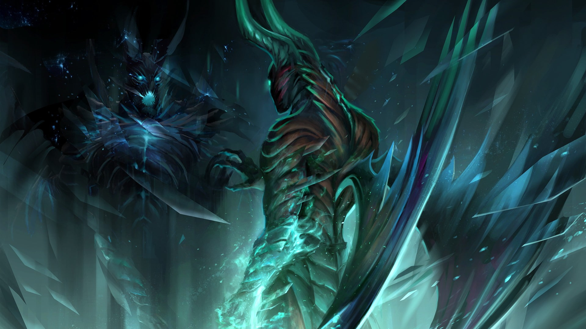

HTML/CSS WEBSITE MADE BY MARTIN (MIO) LUNA

HTML/CSS WEBSITE MADE BY MARTIN (MIO) LUNA
TERRORBLADE

Terrorblade is the demon marauder—an outlaw hellion whom even other demons fear. A cosmic iconoclast, he stole from the
Demon Lords, ignored the codified rites that should have bound his behavior, and broke every law of the seven Infernal
Regions. For his crimes, he was taught this lesson: even Hell has a hell. A short, brutal trial ensued, with many dead
on all sides, and he was finally incarcerated in Foulfell, a hidden dimension where demonkind imprison their own.
But Foulfell is no normal prison. In this dark mirror of reality, demons are sentenced to gaze eternally into the
twisted reflection of their own souls. But instead of suffering, Terrorblade made himself master of his own reflected
worst self—a raging, thieving demon of unimaginable power. With his inner beast under sway, he destroyed the fractal
prison walls and burst free to turn his terror loose upon all creation.
Terrorblade, the Demon Marauder, is a melee agility hero who grows to a devastating carry in the later stages of the
game. Terrorblade has the highest starting armor in the game, but is squishy due to his low health, meaning he needs
strength items to be tanky enough to sustain damage to himself and his illusions. As with all illusion-based heroes, he
needs attribute-based items in order to make his illusions powerful. He uses Reflection, which creates invulnerable
illusions of all nearby enemy heroes for a few seconds. Conjure Image creates an illusion of Terrorblade that deals
considerable damage at max level. Terrorblade can create up to two illusions, which together deal more damage than
Terrorblade himself, effectively multiplying Terrorblade's base damage (but not his bonus damage). Metamorphosis
transforms Terrorblade into a powerful ranged demon capable of wreaking havoc on his enemies with its bonus range and
damage. Metamorphosis also makes illusions of Terrorblade transform into his demonic form, but they revert back once
they wander too far away from Terrorblade. Finally his ultimate, Sunder, swaps his health with a targeted hero, ally or
enemy alike. This ability makes ganks on him incredibly risky since he can sunder a hero before finishing them off with
a few attacks. With his two illusion-based abilities, the 'semi-ultimate' Metamorphosis and his ultimate, Sunder,
Terrorblade's skill set makes him a strong foe in the early game and absolutely terrifying at the later stages of the
game. He is usually played as a hard carry.